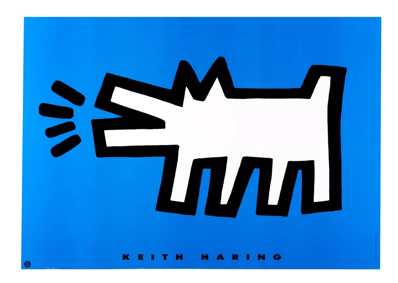

Keith Haring
The Artist of the Subway
Hello, detective! 🐾 Today we meet an artist who turned a train station into a gallery — then we crack a figure of speech that's seriously funny: the oxymoron!

Art in surprising places! 🎨
- 🧱Have you ever seen a drawing on a wall outside? Where?
- 🤝Look at the picture. What are the two figures doing? How do they feel?
- 🖍️If you could draw on any wall in the world, which one would you pick?



Haring's style is instantly recognisable. His figures usually have no faces and almost no detail — just simple, bold outlines — and yet they are full of movement, as though they are dancing or leaping right off the wall. Around them he often drew little lines to show energy, light and action. His art looks cheerful and simple, but it was created by a very clever, hard-working artist.
Look at the dog. What do the three little lines by its mouth tell you? Make the sound! 🔊

The doodle room ✏️
Keith painted every single surface! Can you spot…
🌀 a spiral?
⚡ a zigzag?
🙂 a face hiding in the lines?
🏠 Would you paint your bedroom like this?

Write three sentences about a busy city. Label each one! 🏙️
1 · simile
The traffic was as…
2 · metaphor
The station was…
3 · oxymoron
The crowd was a…

- 1Write five oxymorons of your own, and use three of them in sentences.
- 2Write one example each of a simile, metaphor, personification, hyperbole and oxymoron.
- 3Listen out for an oxymoron in a film, song or everyday speech, and write down what it really means.
Tell me without looking: what is an oxymoron? Give me one of your own! ⚡
Coming in Lesson 37
Plurals — the rules for making words mean “more than one,” including tricky ones (mouse → mice!). 🐭